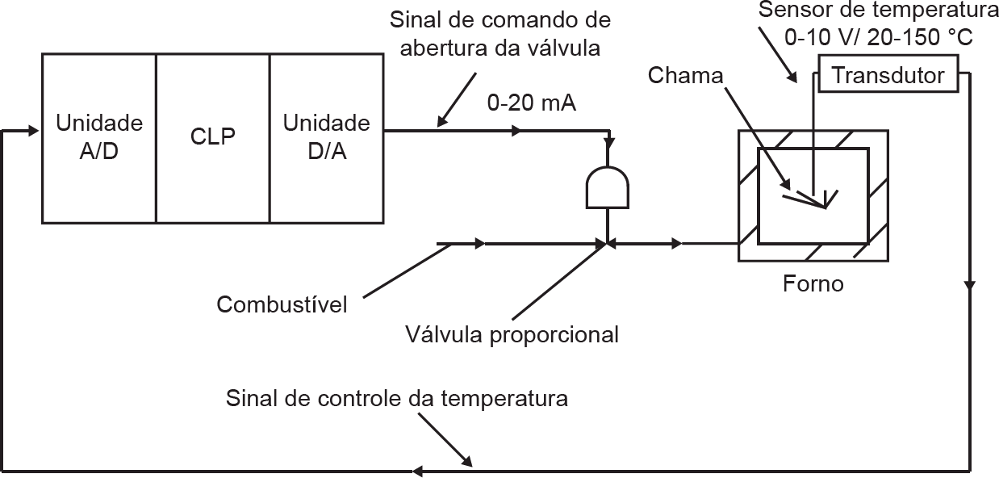

A figura abaixo contém a representação esquemática de uma aplicação para o controle de temperatura de
um forno utilizando um controlador lógico programável (CLP). O sensor de temperatura em conjunto com o
transdutor fornece um sinal analógico 0-10 V / 20-150°C enviado ao CLP, o qual por sua vez, envia um sinal
de 0-20 mA para a válvula, permitindo a variação de sua abertura e a dosagem gradativa da quantidade de
combustível enviado ao forno. Assim, pode-se modificar a temperatura do forno conforme a necessidade.

Figura 1
PRUDENTE. Automação industrial: PLC, teoria e aplicações (curso básico). Rio de Janeiro: LTC, 2010 (adaptado).
Em relação ao sistema de automação apresentado, avalie as afirmações a seguir.
-
O uso da unidade A/D de 8 bits no CLP permite aquisição de temperatura com uma resolução de,
aproximadamente, 0,508 °C.
-
A unidade D/A no CLP pode ser substituída por um módulo de saída digital a relé especificado para um
valor de saída de corrente de até 10 A, valor maior que o sinal de saída enviado para a válvula.
-
Para comunicação entre o CLP e um sistema SCADA (supervisory control and data acquisition), podem
ser usadas, entre outras, rede industrial PROF/BUS ou comunicação serial com protocolo MODBUS,
sendo a primeira mais onerosa que a segunda.
-
O sistema supervisório pode ser programado diretamente no CLP, sem a necessidade de dispositivos
adicionais, reduzindo o custo de implementação do sistema como um todo.
-
A realização dessa automação requer um CLP de grande porte, devido ao sistema operar em malha
fechada, o que implica o uso de blocos específicos de programação.
É correto apenas o que se afirma em
-
I e II.
-
I e III.
-
II e IV.
-
III e V.
-
IV e V.